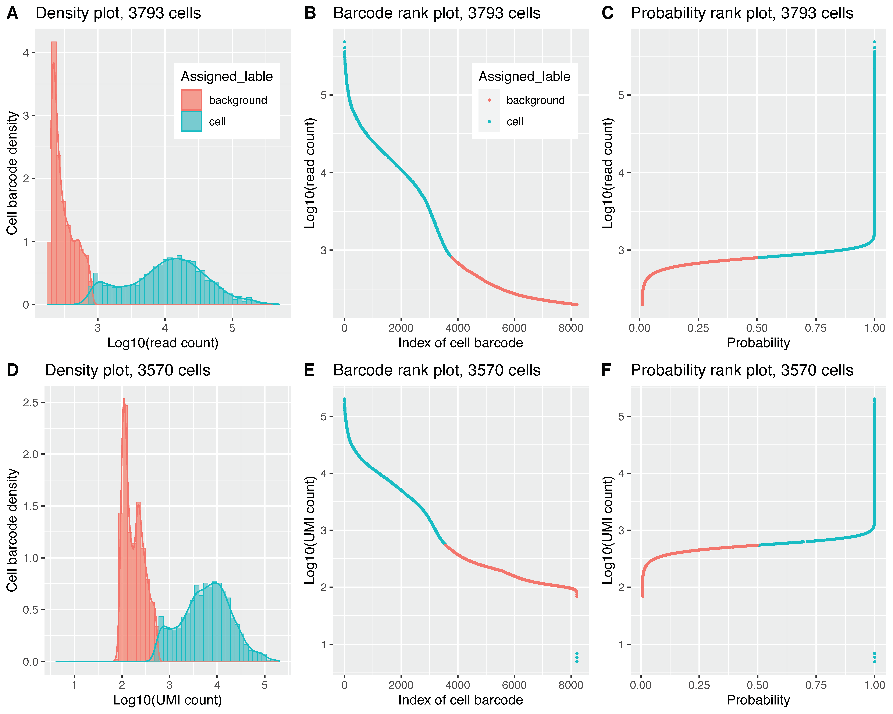

2. cell_calling.py¶
2.1. Description¶
Call cells from background.
First, calculates the “read count” and “UMI count” for each barcode (i.e. cell barcode),and generates the barcode rank plot and density plot.
Then, using the Bayesian Gaussian Mixture Model (BGMM) to classify barcodes into “cell-associated” and “background-associated”.
- Options:
- --version
show program’s version number and exit
- -h, --help
show this help message and exit
- -i IN_FILE, --infile=IN_FILE
Input file in BAM foramt.
- -o OUT_FILE, --outfile=OUT_FILE
The prefix of output files.
- --cb-tag=CB_TAG
Tag of error-corrected cellular barcode in BAM file. default=’CB’
- --umi-tag=UMI_TAG
Tag of error-corrected UMI in BAM file. default=’UB’
- --cb-num=CB_LIMIT
Maximum cell barcodes (ranked by associated UMI frequency) analysed. default=100000
- --min-read-count=MIN_READS
The minimum number of reads to filter out cell barcode. default=200
- -r, --report
If set, generates report file for mixture models. default=False
- -s RANDOM_STATE, --seed=RANDOM_STATE
The seed used by the random number generator. default=0
- --prob-cut=PROBABILITY_CUTOFF
The probabiilty cutoff [0.5, 1] to assign cell barcode to the “cell” or the “background” component. default=0.5
- --verbose
If set, print detailed information for debugging.
2.2. Example¶
$ python3 cell_barcode.py -i possorted_genome_confident.bam -o output
2020-10-05 02:44:42 [INFO] Top 100000 cell barcodes (ranked by associated UMI frequency) will be analyzed.
2020-10-05 02:44:42 [INFO] Only count UMIs for cell barcodes with more than 200 reads.
2020-10-05 02:44:42 [INFO] Reading BAM file "possorted_genome_confident.bam". Count reads for each cell barcode ...
2020-10-05 02:59:37 [INFO] Total 98839578 alignments processed
2020-10-05 02:59:37 [INFO] Filtering cell barcodes ...
2020-10-05 02:59:37 [INFO] Total cell barcode: 856517
2020-10-05 02:59:37 [INFO] Cell barcode with more than 200 reads: 8204
2020-10-05 02:59:37 [INFO] Reading BAM file "possorted_genome_confident.bam". Count UMIs for each cell barcode ...
2020-10-05 03:15:33 [INFO] Total 90458232 alignments processed
2020-10-05 03:15:33 [INFO] Writing cell barcodes' reads and UMI frequencies to "output.Read_UMI_freq.tsv"
2020-10-05 03:15:33 [INFO] Done.
2020-10-05 03:15:38 [INFO] Read output.Read_UMI_freq.tsv to build Bayesian Gaussian Mixture Model (BGMM)...
2020-10-05 03:15:38 [INFO] Reading input file: "output.Read_UMI_freq.tsv"
2020-10-05 03:15:38 [INFO] Total analyzed barcodes: 8204
2020-10-05 03:15:38 [INFO] Build BGMM ...
2020-10-05 03:15:38 [INFO] Building Bayesian Gaussian Mixture model for subject: UMI_count ...
2020-10-05 03:15:40 [INFO] Building Bayesian Gaussian Mixture model for subject: read_count ...
2020-10-05 03:15:40 [INFO] Classify cell barcode using the BGMM models ...
2020-10-05 03:15:40 [INFO] Writing to "output.UMI_count_classification.txt" ...
2020-10-05 03:15:40 [INFO] Writing to "output.read_count_classification.txt" ...
2020-10-05 03:15:40 [INFO] Writing R script to "output.Read_UMI_freq.r"
2.3. Output files¶
output.read_count_classification.txt and output.UMI_count_classification.txt. Classify cell barcodes according to read (or UMI) count.
Column-1 : The barcode sequence.
Column-2 : Read/UMI count in log10 scale.
Column-3 : The probability that this barcode belonging to “background” group.
Column-4 : The probability that this barcode belonging to “cell” group.
Column-5 : Assigned lable (“cell”, “unknown” or “background”).
Barcode |
log10_count |
background_prob |
cell_prob |
Lable |
AACAACCCAGTTCTAG |
5.68488933 |
1.03E-73 |
1 |
cell |
CTATCCGCATGGATCT |
5.61115166 |
2.05E-70 |
1 |
cell |
AATCGTGTCTTTGATC |
5.55137314 |
8.49E-68 |
1 |
cell |
… |
||||
GAACGTTTCGGCAGTC |
2.30103 |
0.98811857 |
0.01188143 |
background |
CATCCACAGGCGAAGG |
2.32633586 |
0.98862923 |
0.01137077 |
background |
TCACGGGGTGATATAG |
2.31175386 |
0.98836594 |
0.01163406 |
background |
output.Read_UMI_freq.tsv
Serial# |
Cell_barcode |
read_count |
UMI_count |
1 |
AACAACCCAGTTCTAG |
484049 |
202124 |
2 |
CTATCCGCATGGATCT |
408462 |
184155 |
3 |
AATCGTGTCTTTGATC |
355937 |
165832 |
4 |
CTTCTCTGTTGTCCCT |
349352 |
159697 |
5 |
GAGAAATCATGACACT |
362654 |
153856 |
… |
output.Read_UMI_freq.r
Generate figure as below. Panels A, B, C were generated from read count, and panels D, E, F were generated from UMI count. (A) and (D) Density plots of cell barcodes that have been classified into background (red) and cells (blue). (B) and (E) Barcode rank plots of all cell barcodes. (C) and (F) Probability rank plots of all cell barcodes.
{kind=link}
Note
All the cell barcodes were classified into two groups, because the default --prob-cut is 0.5.
In this Scenario, each barcode was either classified into cell group (when prob >= 0.5)
or background group (when prob < 0.5). If the --prob-cut is set to 0.95, cell barcodes
will be classified into three groups: “cell” (when cell_prob >= 0.95), “background” (when background_prob >= 0.95)
and “unknown” (cell_prob < 0.95 and background_prob < 0.95). Please see figure below.
{kind=link}